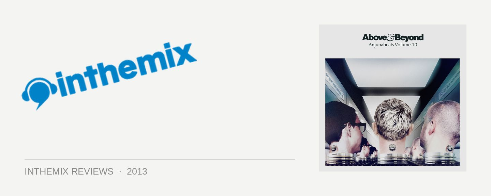

Various - Anjunabeats Volume 10, mixed by Above & Beyond
Dance music has a fascinating way of doubling back on itself, like a snake endlessly eating its own tail; drawing on the old as much as it’s alchemising the new. A few years back when mass market juggernauts like Swedish House Mafia were overhauling their sound for maximum saturation, they had the bright idea of plundering the treasure chest of classic trance; empitomised by the high-cranked melodic riff of their ‘09 anthem One.
As Above & Beyond’s Tony McGuinness remarked to inthemix in 2011: “We were so scared of riffs a few years ago that we kind of left them in a cupboard, and the house guys discovered them and were like, ‘Oh my god, all this stuff we can make great records out of!’”
If Anjunabeats Vol. 10 is any indication, then things have come full circle again: trance is now taking inspiration from big-room house. And in terms of what Above & Beyond have managed to pull together here, it’s definitely not a bad thing. It’s a further evolution from the techy ‘Trance 2.0’ grooves that characterised Vol. 9., though the main-room influence is unmistakable this time around. The records here are all crammed with intricately produced house percussion and grooves, thundering electro basslines for some seriously heavy bottom-end, spiraling wind-ups aplenty, a few techy rhythmic elements sprinkled lightly into the fray; while the melodies are just as likely to convey a Daft Punk-esque sense of fun, as the more traditional euphoria.
It’s a direction that’s yielded huge new creative possibilities here, though it’s also proved divisive with fans; depending on where you stand, Anjunabeats Vol. 10 will either represent an accomplished new evolution for the label, or otherwise, it’ll be A&B ringing the cash registers.
We’re not far into the first disc before we hear that Parisian melodic flavour in Soundprank’s Animus; the mix begins at a high tempo and stays there, but it’s a solid run of quality. Sunny Lax’s Isla Margarita is about as perfect as a nu-trance tune can be, an example of when the new and traditional elements come together perfectly. Meanwhile, fresh faces Audien provide one of the compilation’s defining moments with Altara, a very housey effort indeed, though it still lets those trademark gorgeous Anjunabeats melodies shine through.
Above & Beyond’s club mix of Alchemy with Zoe Johnston possibly ranks as one of the best vocal tracks the trio has worked on, trading the saccharine for what’s instead an uneasy ode to betrayal, synching perfectly with the tune’s gritty rumbles. The trio also delivers a new instrumental in the form of Walter White that’s properly slamming; a rollicking sequel to Formula Rossa from Vol. 9, it shows they’re not afraid to let loose with a bit of sonic insanity every now and then. And the tunneling hook that opens Oliver Smith’s Pressure chugs with maximum force; if trance was ever accused of lacking a “groove”, that’s long ceased to be the case, as these tunes will all pack a punch on the dancefloor for purists and casual listeners alike.
Overall the second disc is the less satisfying of the two, sporting a few lacklustre contributions from the usually dependable Arty, Andrew Bayer and Super8 & Tab, where the new template is spread a bit thin. Still, there’s no shortage of heavy-impact tunes, spearheaded by Norin & Rad who’ve calibrated their new torpedo Aldo for maximum impact. Genix is another extremely capable newcomer who shows Anjunabeats haven’t lost their knack for hunting down fresh talent, and he’s excellent at retaining the edgy progressive elements as the label evolves.
Genix has three tracks here, but his collaboration with Lange, Immersion, is a real home-run; a joyful burst of melody that comes packaged with a heavy, techy grind. The other hot-new-thing is Bluestone, who delivers one of the comp’s strongest tracks with Sinai; sporting a heavy buzzsaw of a bassline that’s chunky enough to nearly double as a guitar riff, he still manages a chorus with enough emotion to even satisfy even the most hardened Anjunabeats purist.
For the most part, any of the detractors shrieking “trouse” deserve to be ignored. If the purists had their way, we’d still be raking over the same formulas from trance in the ‘90s; which is a formula for boredom if ever there was one. Anjuna’s standard of production is A-class, and some of the records here pack a heavier punch than anything across its back catalogue.
Nonetheless, it can’t be denied there’s somewhat of an emotional connection missing in the final product; with the talent focused so squarely on summoning thrills and spills on the dancefloor, they’ve traded some of the deeper, progressive elements that really do resonate. It’s also a little odd that the entire stable is all of a sudden producing what’s essentially a homogenous sound.
However, with Anjunabeats Vol. 10 standing so effortlessly on its own, these are compromises that can be lived with. Again, Above & Beyond show there’s creative life left in trance yet.